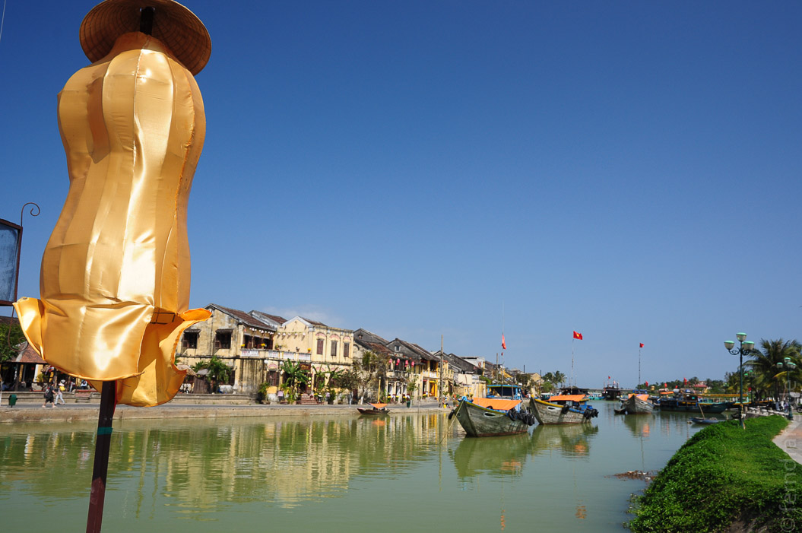
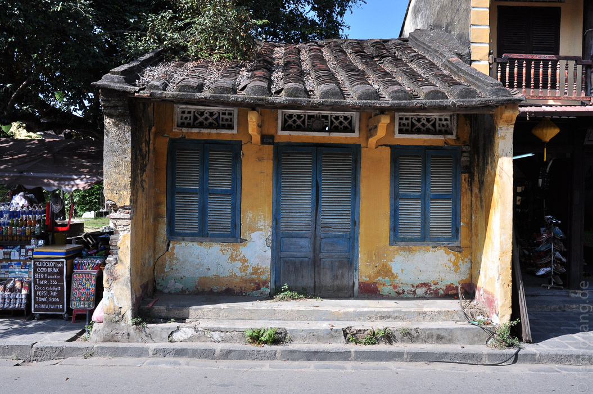
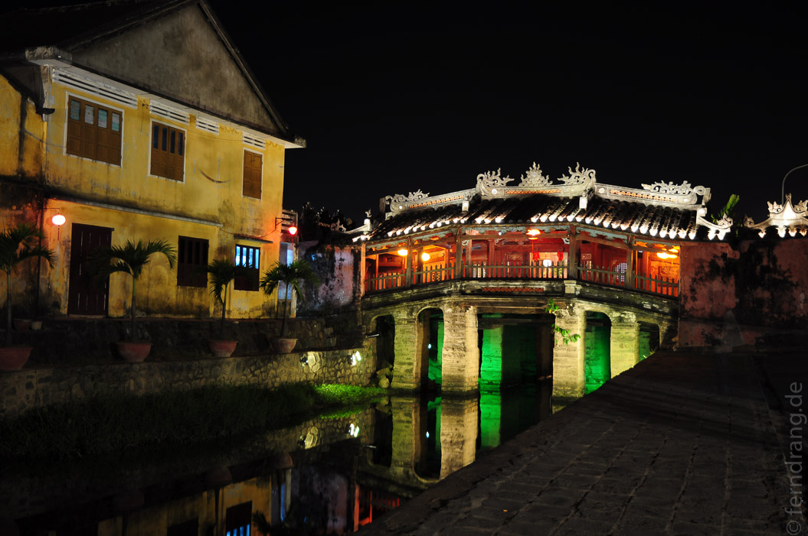
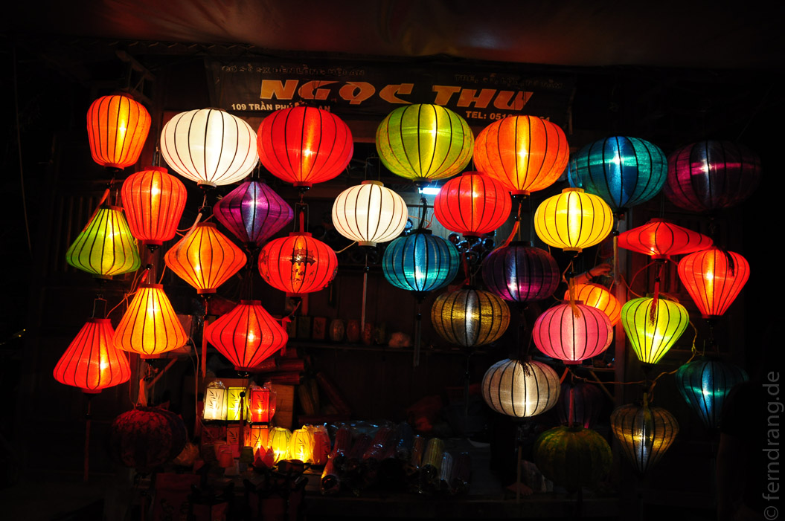
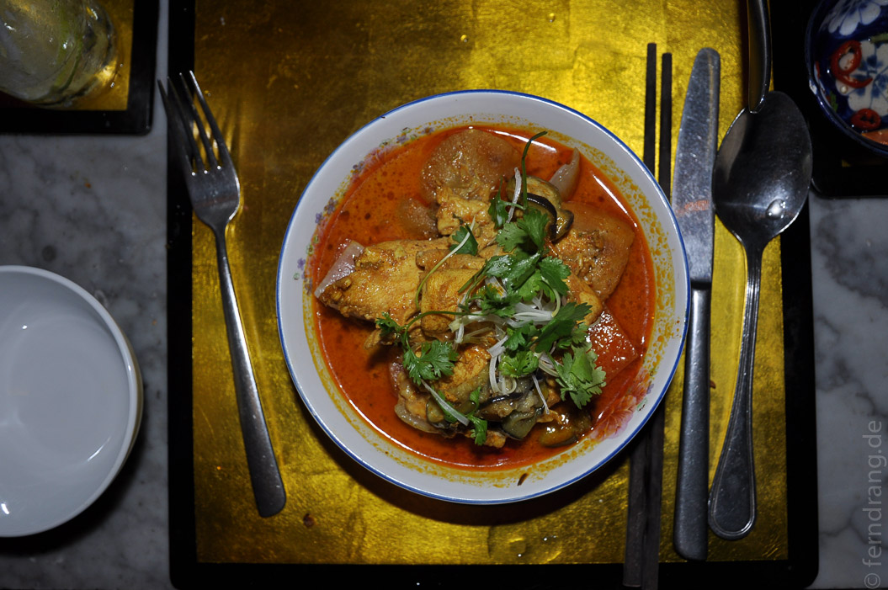
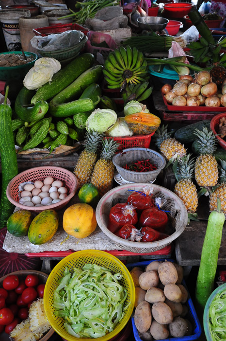
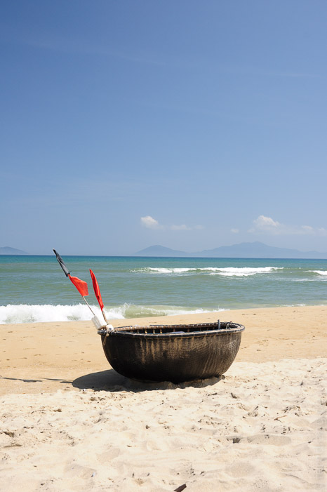
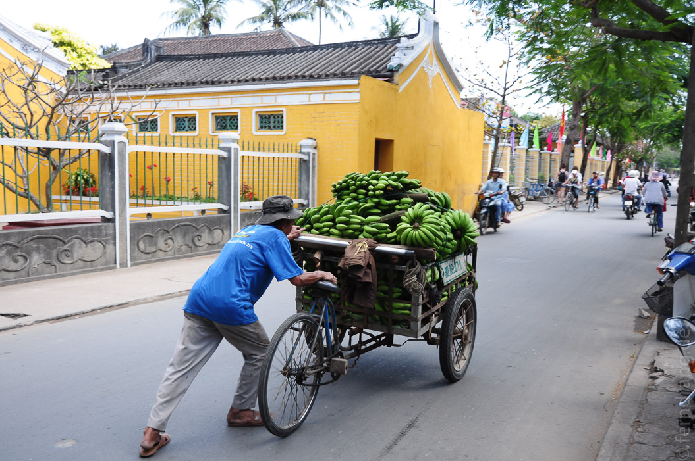

Weiter nach Süden reisend war unser nächster Stopp die kleine Stadt Hoi An, die nur wenige Busstunden von Hue entfernt liegt. Mit jedem Meter wird die Umgebung tropischer. Jetzt stehen Palmen zwischen den Reisfeldern und immer häufiger schleicht sich das Meer bis an die Straße.
Hoi An ist für seine ausnehmend schöne, chinesische Altstadt berühmt. Auf einige Sträßchen ist hier der Segen des Weltkulturerbes herabgegangen, so dass die hübschen, alten Häuser mit ihren geschindelten Dächern erhalten geblieben sind. In der ganzen Altstadt sind Ketten von Lampions kreuz und quer über die Gassen gespannt. Auch die kurze Brücke zum Viertel An Hoi, in dem wir im gleichnamigen Hotel mit Blick auf den Fluss untergekommen sind, ist mit Laternen geschmückt.
 Nach Sonnenuntergang wird der verwaschene Putz der gelben Häuserreihen von einem Dach bunter Lichter über den Straßen beschienen. Das ist so malerisch, wie es klingt. Zusätzlich hat man noch einige übelst kitschige Pappmaché-Figuren (Drache, Schildkröte, sogar ein Körbchen mit zwei Katzen!) in Zwei-Meter-Format auf Pontons in den Fluss gesetzt, was allerdings weniger malerisch ist.
 Natürlich ist der Ort kein Geheimtipp - hier schieben sich jede Menge Touristen über die Japanische Brücke und andere Sehenswürdigkeiten. Allerdings ist dadurch auch in jedem zweiten Haus ein Restaurant untergebracht. Im Gegensatz zum sonst üblichen Plastikstuhl- und Neon-Charm wird hier sehr auf das Ambiente geachtet. Hier haben wir jeden Abend in einem noch hübscheren Lokal gesessen. Das Essen ist so köstlich, dass wir bis an die Schmerzgrenze geschlemmt und gleich seitenweise von der Speisekarte bestellt haben.
Nach einem Besichtigungstag haben wir uns wieder Räder geliehen, um die Umgebung zu erkunden. Zu unserer Überraschung ist der knapp sechs Kilometer entfernte Strand richtig urlaubstauglich. Zwischen Palmen liegend konnten wir schon mal etwas vorbrutzeln. Die Strandfeen haben uns ausreichend mit Lime Juice versorgt, so dass wir sehr entspannt anfangen konnten unsere Bücher zu verschlingen.
 Man kann hier nicht nur gut Essen, sondern auch bei einem Kochkurs hinter die Kulissen gucken. In dem schick gemachten Red Bridge Restaurant etwas außerhalb konnten wir einem "Chef" beim Gemüsehacken im Zeitraffer zu sehen und durften das anschließend in Zeitlupe nachmachen. Die Röllchen mit selbst gemachtem Reispapier waren köstlich. Die Herstellung einer Tomatenschalen-Rose und einem Gurken-Fächer beim Exkurs "Food Decoration" war weniger erfolgreich.
